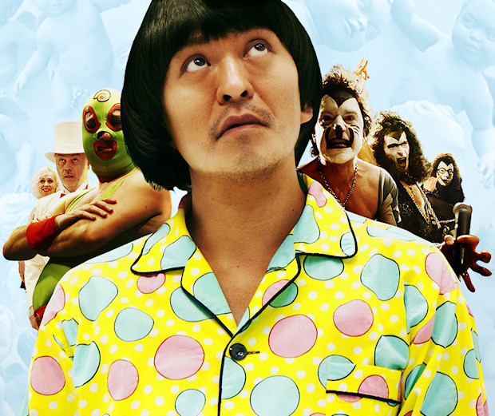

Mostanra gyakorlatilag elkerülhetetlen, hogy a neten lépten-nyomon ne botoljunk bele videókba, kivéve talán azoknak, akik csak Lynx-et, vagy egyéb szöveges böngészőt használnak (melyek, megjegyzem, sok esetben nagyon hasznosak, esetenként életmentőek).
Szóval két rövidfilmet, vagy videót szeretnék megosztani veletek. Az elmúlt két-három hónap alatt ezek voltak azok, amik olyan „atyaég” reakciót váltottak ki belőlem. Negyed év alatt kettő nem tűnik soknak, de tulajdonképpen nem is kevés, örülök, hogy van egyáltalán ez a kettő.
Az első kisfilm egy IBM self-promó videó, amiben egy Jeopardy!-t játszó számítógéprendszerrel ismertetnek meg minket.
Nagyon tetszik a feszültséget fokozó zene, ami később teljesen más stílusba vált át. Engem megfogott.
A második videó személyesebb hangvételű: egy Shinya Kimura nevű fickóról szól, aki motorokat készít. Ő tervezi és az utolsó darabig ő formálja az alkatrészeket, amíg el nem készül egy-egy alkotással. Amint említettem, nagyon személyes ez a darab, és ilyen jó hanggal netes videóban még nem találkoztam.
A vágás csodálatos mindkettőnél, tekintve, hogy egészen rövidek ezek a kisfilmek/videók. Sok a vágás, de nem ész nélkül vannak összedobva, hanem nem tudom megmagyarázni hogyan, de jól (és kész).
Csütörtök este volt szerencsém részt venni egy ázsiaifilm-buziknak tartott privát vetítésen, ahol Hitoshi Matsumoto, a Dai-Nipponjin rendezőjének legújabb filmjét a Shinboru-t (Symbol-t) láttuk. Tavaly ősszel láttam az első teasert, ami egyből felkeltette az érdeklődésemet, tekintve, hogy a Dai-Nipponjin is eszméletlen volt. Az alábbi trailer megtekintését egyébként erősen ajánlom, mivel ez nem olyan, ami bármit is előre elárulna, de – mint az előbb írtam – felcsigázza az érdeklődést. Akit a trailer megfogott az ugorjon a lenti kép alá, mert egy kissé spoileres leszek.
Matsumoto egy ablak nélküli, fehér szobában ébred, és fogalma sincs, hogy mi történt vele. Az egyik falon talál egy kis kitüremkedést, megnyomja, a falakból pedig kinő több száz puttó, amik nevetnek, majd mind visszahúzódnak a falakba, csak a pöcsük marad kinn. Hirtelen váltásokkal operál a film, mert tulajdonképpen két, látszólag független történetet követünk. A másik sztori egy mexikói kisvárosban játszódik: egy pankrátor és családja egy napját látjuk. Matsumoto látszólag valami fura világba (egy kísérletbe) került. Mindig mikor megnyomja egy puttó pöcsét, valami történik: szusi esik ki a falból, vagy egy afrikai fickó teljes harci díszben fut át a szobán, vagy épp egy elérhetetlen ajtó nyílik ki. Eközben Escargotman (Csigaember?), a pankrátor kövér kisfiát szekálják a suliban, hogy az apja úgysem nyer aznap este. Matsumoto tanul, fejlődik. A pankrátor megérkezik a „munkahelyére”, és bemelegít. Folyamatosak a váltások, és a film utolsó fél óráját nem lehet szavakkal leírni, legalábbis én nem tudom leírni, mert leírhatatlan. :)
Remélem, hogy nem voltam túl zavaros, de szándékosan kevertem össze a szálakat, és nem tagoltam őket külön bekezdésekre, próbáltam a témák közötti éles kontrasztot hangsúlyozni.

Hosszú ideje ez a legjobb film, amit láttam. Valószínűleg a héten megnézem az Inception-t, most pedig mindjárt benyomom Jim Jarmusch The Limits of Control című művét, amit ősszel láttam már, de egyszerűen fantasztikusan lassú és hangulatos, ezért megint megnézem. Szóval a héten valószínűleg jön majd még néhány filmes írás.
Visszatérve a Symbol-ra: csodálatos, lebilincselő és végtelenül érdekes. Hitoshi Matsumoto egy zseni.
Egyik este megnéztem Sogo Ishii, az Electric Dragon 80.000 V rendezőjének 2003-as Dead End Run című filmjét. Zsíristenkirály! Három rövid epizódból áll a mindössze 59 perces film. Mindhárom rész azzal kezdődik, hogy az aktuális főszereplő éppen fut, menekül valaki vagy valakik elől. Az ok mindegy, a hangsúly nem azon van, hanem a végkimenetelen. Szóval futás, rohanás, aztán zsákutca mindhárom alkalommal.
Az első epizód egy minimusical, ami végül tragikus véget ér, de azért nagyon érdekes látni, ahogy egy halott nő életre kel és elrabolja gyilkosa szívét, kurva jó sztori. A másodikban a menekülő önmagát látja az üldözőjében, és viszont, az üldöző is önmagát látja az üldözöttben, nem teljesen értem én sem. Totális őrület, olyan mint egy párbaj, amiből az egyik fél sem jöhet ki győztesen, ennek megfelelően ez is történik: fokozódó feszültség, lövöldözés, halál. A harmadik kicsit kilóg a sorból, közel sem olyan sötét, mint az előző kettó. A lényeg, hogy egy fickó menekül, és egy háztető lesz az ő zsákutcája. Ott talál egy fura lányt, a fejéhez pisztolyt szegez, próbál alkudozni a zsarukkal, majd a lány megszerzi tőle a stukkert, de ő is leglább olyan kattant, mint a támadó. A vége gyönyörű zuhanás és érkezés egy madártollal megrakott teherautó platójára, szerencse.
A kézikamerás felvételek hozzák a hangulatot, aztán ott vannak még a különös látványelemek, amiket a rendező előszeretettel alkalmazott az Electric Dragonban is. Huhh… a hangok, nagyon jók, soundtrack állat! Nagyon laza, fura, jazzes zene, nagyon jó.
Közel sem tucatfilm, teljesen egyedi. Ázsiaifilmbuziknak erősen ajánlott.
Volt egyszer egy japán kis srác, aki felmászott a nagyfeszültségű vezetékpóznára, megizzadt, és átcsapott az áram. Jól megvágta, mert feléledt benne a sárkány. A sárkányok nem holmi mitikus lények, mindannyiunkban ott lakozik valahol egy. A lényeg, hogy mióta a gyereket megcsapta a nagyfeszültség, azóta képes beszélni a hüllőkkel. Mindenkit lenyom, nagyon erős. (Vezeti az áramot, mondjuk mindenki vezeti, de ezt nem kell kipróbálni, mert veszélyes, mint a rozsomák.) Ő Dragon Eye Morrison, akinek szerelme a hüllők és elektromos gitárja, amin levezeti a feszültséget!
Van egy másik fickó, aki mindig szerel, antennával méri be a mobilbeszélgetéseket, nagyon gonosz. Ő Thunderbolt Buddha! Célja, hogy lenyomja Dragon Eye Morssiont. Thunderbolt Buddha nagyon furcsa, mert random megöl még néhány jakuzát, mielőtt összecsapna Morrisonnal.
Nagyon érdekes ez a film. Fekete-fehérben forgatták. Rengeteg égő, vezeték, légvezeték, villanypózna, sima és parabolaantenna, valamint villámhárító szerepel benne.
Az egész film olyan képregényszerű. Nagyon jó hangulata van, és az a trashzene, ami végigkíséri a kemény ötvenöt perces művet, tökéletesen illik a sztorihoz és a karakterekhez. Nagyon jól operálnak a hangokkal: a kaméleonok úgy csámcsognak, mint egy hájas kínai barom. Profi.
Thunderbolt Buddhának végül sikerül eljutnia Dragon Eye Morrisonig. Megöli egyik kedvenc gyíkját, vagy tudomisénmijét. Erre Morrison bedühödik, futkos az utcákon és minden felrobban körülötte. Kiváló jelenet!
Egy tetőn végül sor kerül a mindent eldöntő ütközetre. Kiderül hogy Thunderbolt Buddhát gyerekkorában nem egy sima, nyolcvanezer voltos vezeték rázta meg, hanem belecsapott a villám, szóval az ő ereje húszmillió Volt. Hoppá! Persze Dragon Eye Morrisont nem lehet azért olyan könnyen lenyomni. Annyit elárulok, hogy a film egy gyenge cliffhangerrel végződik.
Ha valaki tud még valami hasonlóról, azonnal szóljon, mert kell még ilyen! Egyszerűen fain. :)
Ami azt illeti sokkal előbb megtehettem volna, hogy megnézem ezt a filmet. Egészen pár héttel ezelőttig halogattam a dolgot, de végül nem volt más dolgom egyik este, ezért végül megnéztem. Úgy írom ezt mintha kötelező lett volna megtenni, vagy valami ilyesmi, de erről szó sincs. Sokszor gondoltam, hogy eljött a pillanat, hogy megnézzem Satoshi KonPaprika című zseniális animéjét, de valahogy mnindig elmaradt. Így utólag nézve pont a legjobbkor láttam, mert felrázott, ami az adott pillanatban nagyon jól jött. Előre elmondom, ki**szott jó film.
Satoshi Kon filmjei és sorozatai nem a legkönnyebben megérhető darabok közé tartoznak. Gondolkodni kell rajtuk, megmozgatják az elmét, a fantáziát. Ez a legjobb dolog, amit tehet, miközben olyan világot tár a néző szeme elé, amitől szó szerint eláll az ember lélegzete.
A filmben kifejlesztenek egy szerkezetet, mellyel betekintést lehet nyerni az emberek álmaiba, de egy nap valaki ellopja a titkos projekt egyik prototípusát. Azonnal elkezdenek nyomozni az ügyben, de nem sokat lehet tenni, akkor amikor álom és valóság egymásba olvad egy fantasztikus kép- és hangorgiában, mégis félelmetesen. A történetről nem vagyok hajlandó többet írni, ha érdekel valakit a film, akkor nézze meg.
Ha valaki szokott emlékezni az álmaira, akkor jól tudja, hogy igen sokszor nagyon furcsa dolgokat, „hülyeségeket” tud összeálmodni az ember. Az álmokban bármi megtörténhet, és meg is történik.
Van még mit bepótolnom Satoshi Kon életművéből, de amit a sci-fi, pszichothriller és más műfajok terén letett az asztalra, elismerésre méltó. Bátran ajánlom mindazoknak, aki szereti a jó animét, a jó filmeket és a nem mindennapi látomásokat. Ismétlem önmagam: Bravo, Satoshi Kon!
Mostanában nincs túl sok időm, de erre a posztok gyakoriságából is következtetni lehet. Szóval most „rendhagyóan” rövid leszek, trailerrel meg minden.
Már majdnem két hete, hogy lementem a helyi kis videotékába. Megnéztem az aktuális újdonságokat valami jó kis vígjátékot, meg egyáltalán valami jó filmet kerestem, mert az utóbbi időben moziba sem jutottam el. Megláttam a pulton a Be Kind Rewind-ot, egyből lecsaptam rá. Megkérdeztem, hogy bent van-e. Bent volt. Kivettem, megnéztem. Tudtam, hogy ezt a filmet Michel Gondry rendezte, de én valahogy lemaradtam róla, amikor moziban adták, ha adták egyáltalán valamikor. Egyszerűen éreztem, hogy meg kell néznem. Jól éreztem.
A Tokyo! és az Egy makulátlan elme örök ragyogása után reméltem, hogy Gondry megint tud újat mutatni. Jelentem, tud.
A történet New Jerseyben, Passaic városában játszódik, ami arról híres, hogy ott született a nagy jazzmuzsikus, Hájas Waller, aki végül egy kihűlt vasúti vagonban lelte halálát, de ez most annyira nem lényeges. Ugorjunk!
Adott ez a kissé lepukkant város, van benne egy régi videotéka, ahol csak VHS kazettákat lehet kölcsönözni. A tulaj (Danny Glover) Mike-ra (Mos Def) bízza az üzletet, amíg ő elmegy egy Hájas Waller emléktúrára, de sajnos szgény Mike-nak nincs szerencséje. Félig megzakkant haverja, Jerry (Jack Black) a trafóállomás elleni szabotázsakciója közben felmágneseződik és letöröl minden kazettát. Nagy szarba kerülnek, de támad egy mentőötletük, miszerint sorra újraforgatják a tékában levő összes filmet. Ami persze az egészben a legjobb, hogy egy röpke hét alatt sikerre viszik vállalkozásukat, és az emberek csak az ő filmjeiket akarják látni. Hatalmas sztori. :)
Ez a vígjáték, nem a sok fosparódia, amit Amerika évek óta nyomat. Azokban nincs semmi eredeti, csak lenyúlás és fingós, szarós poénok tömkelege, míg ez egy rendesen kidolgozott hátterű, finom részletekkel machináló igazi(!) vígjáték. Éppen ezért a mai magyar közönség nagy részének ez nem való, túl értelmes film ez ehhez.
Mielőtt megnéztem volna, csak annyit tudtam erről a filmről, hogy a főszereplője Teruyuki Kagawa, aki a Tokyo! című filmben egy hikikomorit, a Sukiyaki Western Djangoban pedig a skizofrén sheriffet alakította. Mindkettőben nagyon jó volt, így gondoltam, ha ebben a filmben is legalább olyan jól játszik, mint azokban, akkor nem fogok csalódni. Előre elmondom, hogy a színészi játék és az egész film magasan felülmúlta minden várakozásomat.
A mai Japánban járunk, egész pontosan Tokióban, ahol a japán társadalom majd’ minden rétege megtalálható, a helyszín tehát adott. Egy átlagos család mindennapjaiba csöppenünk: az apa valamiféle menedzser, középvezető, az anya háziasszony, a nagyobbik fiú kijárta már az iskolát, míg a kisebbik még tolja. Látszik, hogy egyikük élete sem könnyű, és a közöttük lévő viszony sem felhőtlen. A kisebbik gyereknek gondjai vannak az iskolában, a nagyobbik nem talál rendes állást, az anyjuk egész életét otthon tölti, míg az apjukat hirtelen kirúgják.
Ez a film nem is lehetne aktuálisabb, hiszen napjainkban itthon is sokan küzdenek, hogy megtarthassák munkahelyüket, hogy ne kerüljenek utcára, de sajnos ez nem mindig sikerül. Most pedig pontosan egy ilyen szituációban találja magát a családapa. Nem tehet mást, mint gyorsan új állás után néz, ami az ő helyzetében egyáltalán nem könnyű, és amíg nem talál megpróbálja fenntartani a látszatot, hogy még mindig sikeres menedzser. A háttérben levő pénzügyi gondok, a túl korai hazaérkezések sejtetni engedik a háttérben folyó dolgokat.
A látszatot nem lehet a végletekig fenntartani, így sorra derülnek ki a problémák, kezdve a kisebbik gyerekkel, majd a nagyobbikkal, aki elhatározza, hogy bevonul az amerikai hadseregbe, végezetül az apa munkanélküliségével. Végül eltűnik a családot összetartó erő, egy szempillantás alatt minden szétesik, vagy inkább csak szétesni látszik.
Összefoglalás képpen pedig egy idézet valakitől, aki szintén látta a filmet.
At first I thought this film would be a depressing story to watch, but I was surprised that the film was actually very uplifting. Although it’s a sad story overall, it has a very powerful message if you watch it to the end, a message that will encourage you to move on even when life gets to its darkest moment.
A gyötrődést és az emberben uralkodó belső feszültséget tökéletesen ábrázoló mű. Keserédes, igazi, emberi történet. Kiemelkedő alkotás.
Ahogy legutóbb, most is egy sci-fi anime antológiáról írok egy rövid bemutatót.
Taku Mayumura története alapján Masao Maruyama producer keze alatt három, méltán híres rendezőt (Rintaro, Yoshiaki Kawajiri, Katsuhiro Ôtomo) szedtek össze, hogy Neo Tokyo címmel egy filmben vászonra vigyék a következő három nem mindennapi történetet.
Sajnos nem találtam meg az eredeti trailert, így nekem kellett összevadászni valamit a netről. A következőt sikerült:
Rintaro – Labyrinth-Labyrintos Rintaro rendezte a híres, 2001-es Metropolis című animét, ami ha jól emlékszem világsiker volt, de ha nem az sem érdekel, mert én nagyon szeretem. A rendező viszonylag nehéz feladatot kapott azzal, hogy egyfajta keretet kellett készítenie, ami összefogja az egész filmet.
Rögtön a film elején egy igazán furcsa világba kerülünk, ahol egy kislány, Sachi és a macskája, Cicerone fogócskáznak. Játék közben pedig egy ingaórán keresztül egy rémisztő és számukra mégis érdekes és mulatságos labirintusba jutnak, melynek végén egy cirkusz áll. Egy bohóc várja őket a bejáratnál, aki utat mutat nekik, így vezetve át a nézőt az anime következő rövidfilmjébe.
Yoshiaki Kawajiri – The Running Man Valahol a jövőben az emberek egyik kedvenc sporteseménye egy gyilkos „autóverseny.” Egy ilyen versenyre látogat el a történet narrátoraként szereplő újságíró. Egy cikket ír az eddigi legsikeresebb versenyzőről, Zach Hugh-ról, aki már tíz éve versenyez és minden futamát túlélte. Az újságíró, hogy miképpen, azt nem lehet tudni, bejut Hugh-hoz, aki éppen elmélyülten koncentrál. Ekkor az újságíró rájön, hogy Zach Hugh valamiféle telekinetikus képességgel rendelkezik, ugyanis koncentrációja során maga körül mindent összezúz valamiféle láthatatlan erő.
A verseny során Hugh minden ellenfele és maga Hugh is saját erejének áldozata lesz. Egy elhasznált, kiégett embert mutat be ez a film: „A szíve, amely valaha másokat olyan erősen buzdított már saját magát sem buzdította, csak megszokásból dobogott, mert erre képes volt.”
The Running Man
Katsuhiro Ôtomo – Construction Cancellation Order Azt hiszem Katsuhiro Ôtomo munkásságát nem kell ecsetelnem, mert ezt szerintem több korábbi bejegyzésemben is megtettem, szóval most ezt át is ugrom, és rátérek a lényegre.
Egy dél-amerikai köztársaság, Aloana újonnan választott kormánya felbont egy korábban kötött, hatalmas szerződést az államnak épülő, és jelenleg félkész állapotban levő 444-es komplexumról. A kivitelező vállalat sietve kiküldi a teljesen automatizált építkezésre Tsutomu Sugioka-t felügyelőnek, hogy azonnal állítsa le azt, és hogy derítse ki mi történhetett a korábbi felügyelővel, akit a cég nem tud elérni. Hősünk meg is érkezik a dzsungel mélyén levő 444-es építkezésre, ahol a 444-1-es számú robot fogadja, és vezeti körbe. Sajnos Sugioka-nak nem sikerül a robottal leállíttatni a munkálatokat, és helyzete egyre kilátástalanabbá válik. A gépek egyszerűen nem engedelmeskednek az új felügyelőnek, az építkezés pedig folyamatosan nyeli a pénzt.
Tsutomu Sugioka majdnem arra a sorsa jut, ami a korábbi vezetőé lehetett, bezárják. Végül elpusztítja a 444-1-es robotot, elindul, hogy elpusztítsa a gépeket összekötő központot, ezáltal leállítva az egész építkezést. Eztán érkezik egy új utasítás, mely szerint azonnal folytatni kell az építkezést, mivel a kivitelezőnek sikerült megegyezésre jutni az új kormánnyal. Tsutomu Sugioka erről az üzenetről már nem értesül. Tökéletes bemutatása ez ember és gép ellentétének és egyben egymásra utaltságának.
Construction Cancellation Order
Sajnálom, hogy ez a poszt ilyen rövidre sikeredett, de most, éjfél felé már elég fáradt vagyok. Végszó!
Ugyan az egész film csak ötven perc, de mindenképp megéri megnézni. Lélegzetelállító látvány, csodálatos mechanical design, magával ragadó képi világ és zene, végül, de nem utolsó sorban eredeti történet. Remélem ennél senkinek sem kell több. (Szívesen megnézném moziban.)
Pár hete már, hogy megnéztem Katsuhiro ÔtomoMemories című animéjét, ami három, egyenként kb. negyven perces rövid animéből áll. Katsuhiro Ôtomo művész, forgatókönyvíró, filmrendező, akit legtöbben az Akira című mangája, illetve egész estés animéje révén ismernek, nálam nagy kedvenc. Ha valamihez köze van, akkor az már olyan rossz nem lehet.
Valami igazán egyedit kerestem, lehetőleg sci-fi műfajban, így találtam rá a Memories-re. A három rövidfilmet, három, méltán híres japán rendező és készítette, valamint a zseniális Satoshi Kon is részt vett a munkálatokban, mint forgatókönyvíró. Lássuk miről is szól a három anime, ez a három kivételes és végzetes vízió.
Kôji Morimoto – Magnetic Rose Ez egy hátborzongató sci-fi történet, ami a jövőben, egy űrszemét-szedő teherhajó legénységéről és halálos kalandjukról szól. A jól összeszokott csapat egy rutinmunkát követően egy elhagyatott űrállomásról SOS jeleket fog. Habár nem nagyon szeretnék, nincs más választásuk, mint megvizsgálni a dolgot, ezért két űrhajósukat leküldik az űrállomásra. Először azt hiszik, hogy űrkalózokat fognak az elhagyott állomáson találni, azonban ennél nem is tévedhettek volna nagyobbat. Az állomás régen egy világhíres operaénekesnőé volt. Halála után az állomás mesterséges intelligenciája vette át az irányítást, és próbálta életre kelteni a díva emlékeit. Ennek esik áldozatul a két űrhajós és végül a teherhajó legénysége is, mikor az AI teljes őrületbe csap át.
Monumentális és megrázó. Zene: Yoko Kanno, kiváló.
Magnetic Rose
Tensai Okamura – Stink Bomb Ez a történet sokkal viccesebb, de nem kevésbé tragikus, mint az előző. Tanaka Nobuo sokakkal egyetemben erős megfázással küzd. Hiába kap oltást az orvosától, nem segít rajta. Nobuo egy gyógyszergyártó cégnél dolgozik, és az egyik munkatársa tanácsolja neki, hogy próbálja ki a főnökük asztalán levő egyik új megfázás elleni gyógyszerüket. Nobuo megfogadja a tanácsát, azonban egy másik pirulát kap be a jó helyett. Mivel még mindig nagyon rosszul van, úgy dönt, hogy átmegy a pihenőszobába és szundít egy rövidet, azonban másnap reggelig húzza a lóbőrt, és mikor felébred az intézetben mindenkit eszméletlenül, a földön heverve talál.
Azonnal kiderül, hogy a gyógyszercég nem csak ártatlan influenza és megfázás elleni készítményekkel foglalkozott, hanem a katonaságnak is folytatott kutatásokat. A cég igazgatója azonnal Tokióba rendeli Nobuo-t, hogy vigye el neki az összes titkos iratot. Ekkor kezdődik az igazi kaland, mert előző nap Nobuo pont azt a titkos kutatás eredményeképpen elkészült pirulát kapta be, ami egyszemélyes biológiai fegyverré változtatta őt, miközben erről ő mit sem tud.
Stink Bomb
Katsuhiro Ôtomo – Cannon Fodder A három közül, az utolsó film az, amelyik lelkileg a legdurvább hatást váltja ki. Az animáció nagyon kedves és aranyos, de szinte azonnal rájön az ember, hogy nincs minden rendben a világgal. Pár perc után Orwell 1984-e jutott az eszembe, és ez az anime tényleg olyan: félelmetesen nyomasztó, undorító és iszonyatos világot tár a szemünk elé. Egy hatalmas gépesített városban járunk, ahol az élet nap, mint nap ugyanabban a mederben folyik. Minden nap percre pontosan ismétlődnek a teendők. Egy olyan város ez, amely szó szerint tele van ágyúkkal, és egy másik távoli, ismeretlen ellenségre lőnek minden nap. Egy család egy napjába csöppenünk, ahol jól látszik, hogyan vannak rettegés és kontroll alatt tartva az emberek. Az apa az egyik fő lövegnél szolgál, mint ágyútöltő, az anya gránátokat gyárt egy futószalag mellett, míg gyermekük, akit láthatóan lelkesít a háború, egész nap a hadviselésről szóló előadásokat hallgatja.
Az a legdurvább ebben az egészben, hogy ha ezt egy gyerek nézné meg, akkor nála hasonló hatást válthatna ki, mint a filmbéli gyereknél. Borzasztó eszközök ezek, melyet Katsuhiro Ôtomo-nak így sikerült igazán hatásosan bemutatnia.
Cannon Fodder
Annak ellenére, hogy mindhárom alkotás nyomasztó, azért akad benne bőven rejtett humor. Mindenek előtt pedig filmről-filmre eltérő és kontrasztos hangulattal találjuk magunkat szembe, gyönyörű.


{kind=link}
{kind=link}